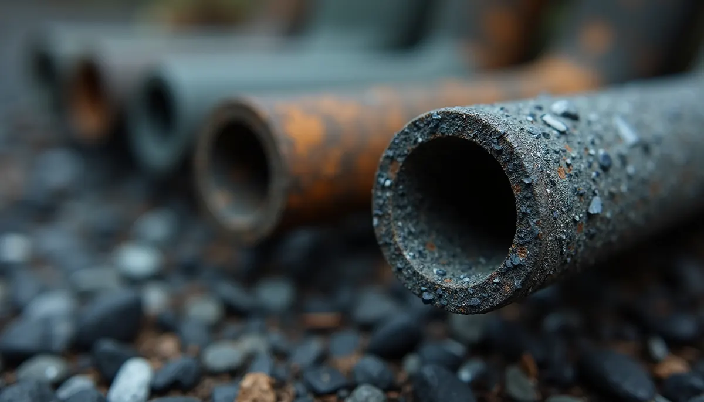
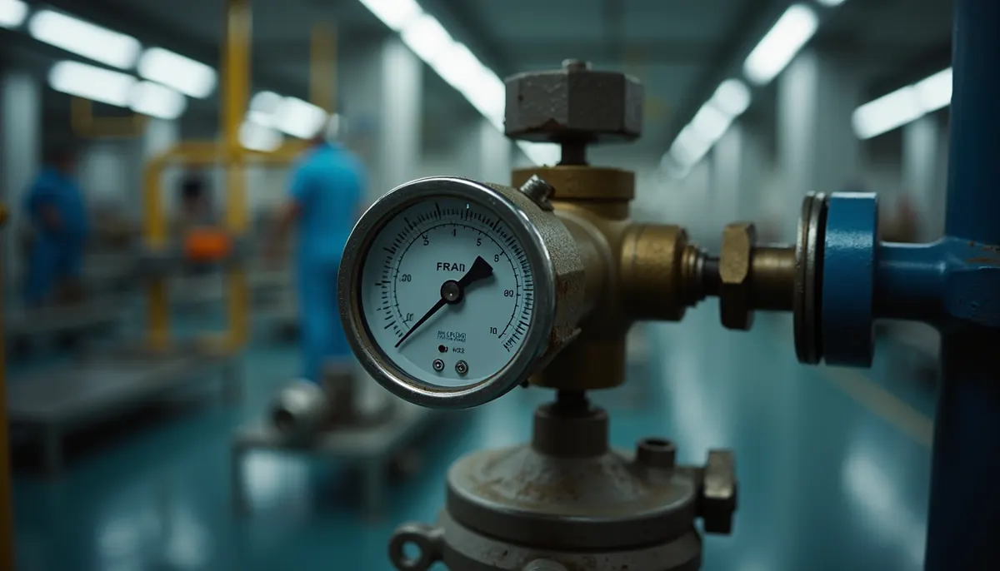

Understanding water pressure in our daily lives is essential. We often take it for granted until we notice a decline. If you have experienced gradual water pressure loss in your home, you are not alone. Many homeowners face this issue, which can lead to frustration. In this post, we will explore the hidden causes of gradual water pressure loss and how to address them effectively.
What is Water Pressure Loss?
Water pressure loss is the decrease in the force with which water flows through the pipes in your plumbing system. Healthy water pressure typically ranges between 40 to 60 psi (pounds per square inch). When the pressure dips below this range, it can impact daily routines, from showering to washing dishes.
Gradual water pressure loss may not seem urgent initially, but it often signals underlying problems that require prompt attention. In fact, a drop of just 10 psi can make a noticeable difference in water flow.
Common Causes of Gradual Water Pressure Loss
Mineral Buildup in Pipes
Mineral buildup is a frequent cause of decreasing water pressure. Over time, minerals like calcium and magnesium accumulate inside pipes, narrowing their diameter. This restriction limits water flow.
For example, homes with hard water may experience a pressure drop of up to 30% over several years due to buildup. Regular maintenance, such as flushing your pipes or using special cleaning solutions, can help keep your plumbing system in top shape.

Leaks in the Plumbing System
Hidden leaks can significantly contribute to gradual water pressure loss. While some leaks are visible, many occur in areas like behind walls or underground.
According to the U.S. Environmental Protection Agency, leaks can waste about 10,000 gallons of water annually for the average household. Inspecting your plumbing regularly and repairing leaks immediately is crucial for maintaining good water pressure.
Faulty Pressure Regulator
For homes with a pressure regulator installed, a malfunctioning device can lead to reduced water pressure. These valves are designed to keep the pressure within a safe range.
If you notice a drop in pressure, observe how it behaves when using multiple faucets. If the pressure fluctuates significantly, it may be time to replace the pressure regulator.

Old or Damaged Pipes
Old or corroded pipes are major culprits of gradual water pressure loss. Pipes made from galvanized steel or lead are particularly susceptible to rust and buildup, which can obstruct water flow.
If your home has aging plumbing, investing in a pipe inspection is wise. Replacing outdated pipes can improve water pressure, often by more than 25%.
Municipal Water Supply Issues
At times, low water pressure may stem from municipal supply problems rather than your plumbing. Local construction or maintenance work can lead to temporary pressure fluctuations.
Staying informed about local water supply issues can help you determine if the problem is limited to your home or part of a larger community trend.
How to Diagnose Water Pressure Loss
Identifying the cause of gradual water pressure loss involves a systematic approach:
- Check other Fixtures: Test multiple taps to determine if the issue affects all fixtures. This can help identify whether the problem is widespread.
- Monitor Water Pressure: Use a water pressure gauge at a tap to measure pressure accurately. This gives you a clear baseline for comparison.
- Inspect for Leaks: Check for visible leaks and signs of water damage in walls, floors, and ceilings.
- Consult a Professional: If your inspection does not reveal the issue, consider calling Angle Stop Plumbing. They have the expertise to detect hidden leaks and diagnose problems quickly.
Preventative Measures to Maintain Water Pressure
Maintaining consistent water pressure can save you time and frustration. Here are some preventative measures to consider:
Regular Maintenance
Schedule routine plumbing inspections and maintenance tasks. Flushing the water heater and cleaning showerheads can prevent mineral buildup, ensuring a smooth flow of water.
Monitor Water Usage
Be mindful of your water consumption. Using multiple faucets or appliances simultaneously can temporarily lower pressure. Spreading out your water use can help maintain consistent pressure levels.
Final Thoughts on Water Pressure Challenges
Gradual water pressure loss can seem puzzling, but knowing its potential causes empowers homeowners to tackle these issues efficiently. From mineral buildup to leaks, various factors can contribute to this plumbing commonality. By staying aware of your plumbing system and committing to regular maintenance, you can help prevent frustrating drops in water pressure. If you encounter issues beyond your expertise, hiring Angle Stop Plumbing is a wise choice. Keeping your water pressure steady not only enhances daily tasks but also extends the life of your plumbing system.
Taking action today can lead to a more comfortable home tomorrow. Addressing gradual water pressure loss will help keep your home running smoothly!
Angle Stop Plumbing (615) 398-3048 or visit us at www.AngleStopPlumbing.com